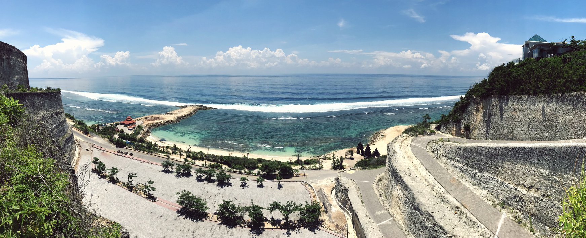

Man 29 metai, bet širdyje vis dar 19. Baigiau Klaipėdos universiteto Viešojo administravimo bakalaurą.
Vis dar -ūtė, tad netekėjusi.
Labiausiai mane apibūdinantis žodis wonderluster. Kelionės yra tarsi varikliukas mano gyvenime.
Kartą pabandžius, nebegaliu sustoti. Tolimiausios kelionės buvo į Havajus ir Balio salą. Išskirti, kuri vieta patiko labiausiai - negaliu, visos aplankytos vietos yra savaip ypatingos.
Visi prisiminimai yra patys geriausi siuvenyrai, o prisiminimų yra begalės ir labai įvairių.
Nuo labai linksmų, kaip naktis praleista Gay Bar'e New York'e, iki gan pavojingų, kai Balio saloje turėjome su drauge avariją ir teko vykti į ligoninę.
Bet žinoma, kiekviena situacija, kad ir kokia ji būtų virto istorija, kuri išlieka atmintyje, kaip patirtis.
Mėgstu skaityti knygas, ypač klasikines. Mano vienos mėgstamiausių knygų - E. M. Remarque "Naktis Lisabonoje", Harper Lee "Nežudyk stazdo giesmininko". Šiuo metu skaitau J. K. Jerome "Trise valtimi neskaitant šuns". Turiu hobį postcrossing. Tai yra atvirlaiškių arba laiškų susirašinėjimas. Mano kolekcija - atvirlaiškiai iš 69 skirtingų šalių. Kai turiu laiko mėgstu gaminti, laiko turiu nedaug, tai galbūt todėl ir mėgstu. Labai patinka gamta. Mėgstu sakyti, kuo daugiau medžių ir kuo mažiau žmonių, tuo geriau. Turiu katę su sulužusia uodega iš gyvūnų globos namų. Tai mano saulės spindulėlis, nors beveik visa juoda. Dar labai norėčiau pasiimti, kokį seną šunį, kad paskutinias dienas nugyventų, kaip garbingas senjoras.
